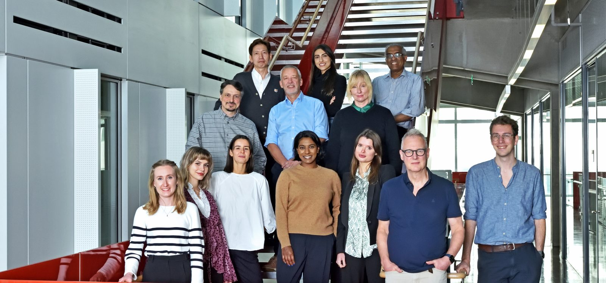
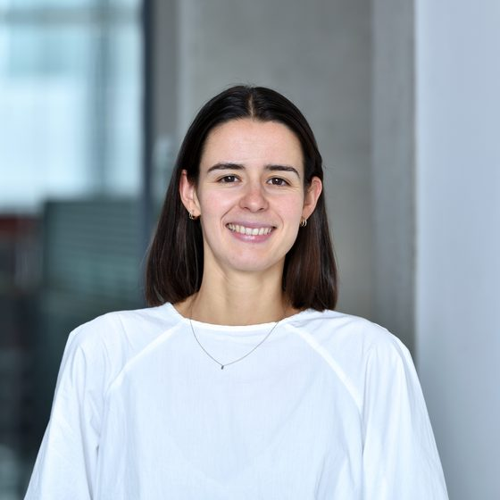

Johnson Lab · Department of Brain Sciences · Imperial College London
The Landmark Project
Mapping the human brain to defeat Parkinson's disease
Funded by a public–private partnership
Industry partners


Charitable funders
A large-scale public–private partnership to discover disease-modifying drug targets and predictive biomarkers for Parkinson's disease.
About the project
A globally unique map of the diseased human brain
The Landmark Project will profile around 24 million single brain cells across multiple brain regions from 400 post-mortem donors. Brain samples and patient-matched cerebrospinal fluid (CSF) are also profiled by genome-wide proteomics, and combined with spatial transcriptomics and quantitative, digitised neuropathology, creating a globally unique dataset for molecular causal inference.
Research to date has struggled to separate the molecular changes that cause Parkinson's disease from those that are a consequence of it. Landmark is designed to make that distinction. Around 10 million people worldwide live with Parkinson's disease.
The programme's scientific foundation was published in Nature Genetics in January 2025, and has since attracted funding from five pharmaceutical companies and two charities. Led by Prof Michael Johnson, Landmark brings together expertise in neuropathology, genomics, biostatistics and bioinformatics.
What makes Landmark unique
Molecular data, read alongside the pathology
-
Multiomics meets quantitative neuropathology
Multiomic molecular data are integrated with quantitative, digitised neuropathology to support causal inference.
-
Seeing the pathology others miss
Proximity ligation assays (PLA) detect oligomeric alpha-synuclein and tau in brain tissue, which standard neuropathology cannot see.
Research themes
Four questions about Parkinson's disease
-
Theme 1
Drivers of Parkinson's pathology
A cross-sectional study across five brain regions and four disease stages spanning Braak stages 1–6, with all 400 donors profiled by single-nucleus RNA sequencing.
-
Theme 2
Causes of Parkinson's dementia
Up to half of people with Parkinson's develop dementia. This theme compares controls, Parkinson's without dementia and Parkinson's with dementia across five brain regions, focusing on amyloid and Lewy body pathology.
-
Theme 3
Neuronal vulnerability
Why do dopamine neurons in the substantia nigra (SNc) degenerate while those in the ventral tegmental area (VTA) are relatively spared?
-
Theme 4
Target discovery & validation
The largest theme: single-nucleus RNA-seq and proteomics from more than 200 Parkinson's cases across three brain regions (~600 samples), linked to genetics and neuropathology.
Data & methods
Multiomic data generation
Landmark generates four layers of molecular data, which together allow molecular quantitative trait loci (molQTLs) to be identified.
-
Genetics
DNA variation from whole-genome sequencing (WGS).
-
Single-nucleus RNA-seq
Gene expression at single-cell resolution, with around 25,000 nuclei per sample.
-
Spatial transcriptomics
Gene expression measured in intact tissue sections, preserving where cells sit within each brain region.
-
Proteomics
Brain and CSF proteins measured with Olink Explore HT, Alamar NULISA and LC-MS.
CSF analysis
Proteomics on around 200 CSF samples from people with Parkinson's disease and controls, linked to genetic, clinical and neuropathological data, to find causal biomarkers for early-stage clinical trials.
Analytical approach
From data to drug targets
-
Cross-sectional analysis
Quality-controlled workflows for cell-type annotation, differential expression, trajectory inference and functional annotation.
-
Genetically anchored causal inference
Mendelian randomisation uses natural genetic variation as a "natural experiment" to test whether molecular changes cause disease.
-
Mediation analysis
Separating the factors that initiate Parkinson's disease from those that drive its progression.
People
The team
Leadership
- Prof Michael Johnson Study PI · Professor of Neurology & Genomic Medicine
- Prof Steve Gentleman Co-PI · Professor of Neuropathology
- Dr Javier Alegre Abarrategui Co-PI · Clinical Senior Lecturer in Neuropathology
- Dr Verena Zuber Associate Professor in Biostatistics
Research team
- Saadia Rahman Project Manager
- Dr Eugene Duff Advanced Research Fellow
- Dr Alexander Haglund Research Associate
-

Dr Maria Otero Jimenez Research Associate in Neuropathology - Jeong Hun Ko Research Technician
- Enoch Newman Data Manager
- Louisa Johnston-Evans Lab Technician
PhD students
- Liv Wiemann PhD Student
- Parisa Rahbar PhD Student
- Katarina Gregorovicsova PhD Student
- Ellise Alder-Chapman PhD Student
Affiliated members
- Dr Yen Tai Clinical Neurologist
Publications
Key publications
- Haglund A, et al. (2025). Cell state-dependent allelic effects and contextual Mendelian randomization analysis for human brain phenotypes. Nature Genetics 57, 358–368.
- Otero-Jimenez M, et al. (2025). Novel in situ seeding immunodetection assay uncovers neuronal-driven alpha-synuclein seeding in Parkinson's disease. npj Parkinson's Disease 11, 259.
- Otero-Jimenez M, et al. (2025). Neuropathological stages of neuronal, astrocytic and oligodendrocytic alpha-synuclein pathology in Parkinson's disease. Acta Neuropathologica Communications 13, 25.
Contact
Get in touch
Department of Brain SciencesBurlington Danes, The Hammersmith Hospital
Du Cane Road, London W12 0NN, United Kingdom